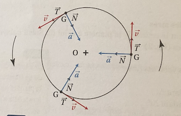

Première loi de Kepler ou loi des orbitres
Chaque planètes du Système solaire décrit autour du Soleil une ellipse
dont le Soleil occupe un des foyers.
Deuxième loi de Kepler ou loi des aires
Le rayon vecteur qui joint le centre de la planète à celui du Soleil bayale
des aires égales pendant des durées égales.
on pase :
SP, SP', SM, SM' = rayons vecteur (avec SP < SM et SP' < SM');
SPP' = aire balayée pendant Δt ;
SMM' = aire balayée pendant Δt' ;
Si Δt = Δt' alors les aires sont égales : SPP' = SMM'
Troisième loi de Kepler ou loi des périodes
Le carré de la période de révolution T de chaque planète est proportionnel au cube
du demi-grand axe a de son orbite elliptique.
T²/a³ = k
- a en mètre;
- T en s²/m³;
- k en seconde (s);
2) Le mouvement circulaire et uniforme d'un point matériel
Caractéristiques du mouvement
La trajectoire est un cercle de rayon R = OG.
Le vecteur vitesse v→
est tangent à la trajectoire et sa norme est constante au cours du temps.
Le repère tournant ou de Frénet
Pour exprimer les vecteurs vitesse et accélérations, on définit le repère de Frénet
(G,T→,
N→), attaché
au point en mouvement G. T→ :
vecteur unitaire tangent à la trajectoire et orienté dans le sens du mouvement. N→ :
vecteur unitaire perpendiculaire à la trajectoire et dirigé vers le centre O; il
est centripète.

Expression des vecteurs vitesse et accélération dans le repère de Frénet
- Le vecteur vitesse est collinéaire au vecteur
T→ :
v→ = v(t) ×
T→.
- Le vecteur accélération est centripète et à une norme constante :
a = v²/R = constante.
3) Le mouvement d'un satellite autour de la Terre
A. Cadre de l'étude
Le référentiel d'étude est le référentiel géocentique supposé galiléen.
Le bilan des forces permet d'identifier une seule force s'exerçant
sue le satellite : la force gravitationnelle
F→
T/S
exercée par la Terre sur le satellite.
On applique la deuxième loi de Newton au centre d'inertie G du satellite:
on obtient l'expression du vecteur accélération :
Si le mouvement est circulaire, la distance d entre les centre de la Terre et du satellite
reste constante, ce qui implique poue le vecteur accélération d'être à la fois centripète
et norme constante. Par exemple, le mouvement d'un satellite géostationnaire autour de la
Terre est circulaire et uniforme dans le référentiel géocentrique.
B. Vitesse du satellite
Pour un mouvement circulaire et uniforme, on établit l'expression de la vitesse du satellite :
C. Période de révolution
La période de révolution T, poiur un mouvement circulaire et uniforme a pour expression :
Maintenant que vous avez fini la lecon sur ce chapitre,
on vous a proposé une Quiz pour tester vous connaissance sur cette leçon.
Allez! C'est parti! Balançez-vous! Cliquer sur le smiley!